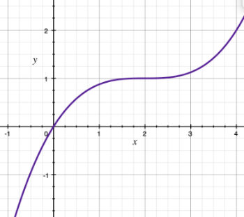
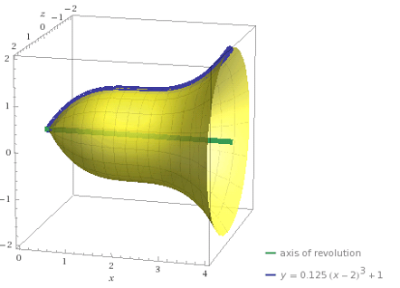
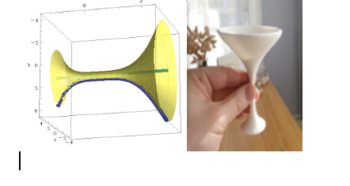

The goal of this project is to create a simple solid of revolution and calculate its volume. You can start by drawing your shape on the paper, and then, using a graphing calculator, try to find a function that will approximately describe the designed shape. For graphing purposes you can use Wolfram Alfa https://www.wolframalpha.com/input/?i=plot or Desmos or, if you have a Mac, Grapher app. For example, to create a bell I started with cubic parabolas. After some experiments I got a curve \(y=\frac{1} {8} (x-2)^3 +1\), \(0\leq x\leq 4\). Here is the graph:

Then I used Wolfram Alfa to visualize my solid of revolution,and here is my bell!

The volume of this bell is \(V=\pi\displaystyle\int_{0}^{4}\Big(\frac{1} {8} (x-2)^3 +1\Big)^2 dx\). Squaring the expression inside the integral and doing some simplifications we get \(V=\pi\displaystyle\int_{0}^{4}\frac{1}{64}(x-2)^6 dx +\pi\displaystyle\int_{0}^{4}\frac{1}{4}(x-2)^3 dx+\pi\displaystyle\int_{0}^{4}dx\). Evaluating each integral separately and using \(u=x-2\) I got \(V=\pi\frac{1}{64}\frac{u^7}{7}\Big|_{-2}^2 + \pi\frac{1}{16}u^4\Big|_{-2}^2+\pi u\Big|_{-2}^2=\frac{32\pi}{7}\). You can use different curves to create objects like vases (hint: try sin(x) or cos(x))
or martini glasses
